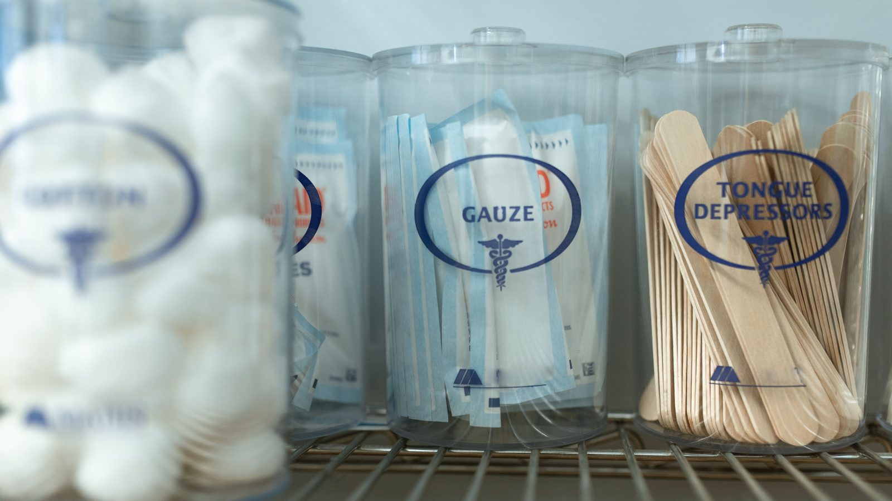

Itapema · Saúde
Itapema · SaúdeItapema abre o Saúde 24h, com médico por telefone e WhatsApp
O atendimento foi contratado pelo mesmo consórcio de saúde.
O CIS-AMFRI publicou nesta segunda, 21 de setembro, o edital do Pregão Eletrônico 08.2026, que vai registrar preço para 266.400 cateteres uretrais hidrofílicos, num total estimado em R$ 2,97 milhões. Os produtos vão para os usuários do SUS de sete cidades: Balneário Piçarras, Bombinhas, Camboriú, Ilhota, Itajaí, Itapema e Porto Belo. O documento publicado não traz a divisão por município, e diz que esse número está numa planilha que ficou dentro do processo administrativo. A sessão de disputa é em 5 de outubro, às 9h.
Em 30 segundos · Modo de Leitura, formato original Santa Informa
Saiu um edital de saúde que envolve Itapema.
Quem publicou foi o CIS-AMFRI.
É o consórcio de saúde da nossa região.
Sede em Itajaí, reúne prefeituras.
O edital é o Pregão Eletrônico 08.2026.
Saiu nesta segunda, 21 de setembro.
O objeto é cateter uretral hidrofílico.
São 266.400 unidades estimadas.
E R$ 2.973.513,20 de valor de referência.
São nove itens, por calibre.
Cinco masculinos, quatro femininos.
O preço de referência vai de R$ 9,16 a R$ 13,95.
Sete cidades entram na compra.
Itapema é uma delas.
As outras seis: Balneário Piçarras, Bombinhas,
Camboriú, Ilhota, Itajaí e Porto Belo.
O consórcio tem onze municípios.
Então quatro ficaram fora deste pregão.
A disputa é em 5 de outubro, às 9h.
Acontece no portal BLL, pela internet.
Quem ganhar tem 15 dias para entregar cada pedido.
A ata de preço vale um ano.
Pode ser prorrogada por mais um.
O edital não diz a cota de cada cidade.
Esse número ficou no processo administrativo.
Poder PúblicoPublicada em Redação Santa Informa

O Consórcio Público Interfederativo de Saúde da Região da Foz do Rio Itajaí, o CIS-AMFRI, publicou nesta segunda-feira, 21 de setembro, o edital do Pregão Eletrônico 08.2026. O objeto é registro de preço para compra futura e parcelada de cateteres uretrais hidrofílicos: 266.400 unidades estimadas, R$ 2.973.513,20 de valor de referência, divididas em nove itens por calibre e por uso masculino ou feminino. A disputa é em 5 de outubro, às 9h, no portal da Bolsa de Licitações do Brasil. A lista de quem vai usar o produto está no primeiro parágrafo do documento, e Itapema está nela. O que não está em lugar nenhum do edital publicado é quanto desse total é de cada cidade.
O próprio edital explica. O produto é para cateterismo vesical intermitente, o procedimento de quem não consegue esvaziar a bexiga sozinho e precisa fazer isso várias vezes por dia, em casa. O texto lista as condições: bexiga neurogênica, retenção urinária crônica, lesão medular, mielomeningocele, esclerose múltipla e outras disfunções do trato urinário. O modelo hidrofílico já vem lubrificado e pronto para uso, o que o documento associa a menos atrito, menos lesão e mais autonomia para quem faz o procedimento sozinho. É material de uso único: cada unidade é uma vez.
O edital nomeia sete municípios participantes. A ata da assembleia do consórcio de 28 de agosto registra que o CIS-AMFRI tem onze municípios consorciados. Ou seja, quatro cidades não entraram nesta compra. A mesma ata já citava os cateteres hidrofílicos na lista de editais previstos, ao lado de contraceptivos, testes de glicemia, sensores de glicose, totens de autoatendimento, horas médicas com psiquiatra e pediatra, transporte de paciente por quilômetro rodado e teleinterconsulta. O pregão desta segunda é o primeiro dessa fila a virar documento público.
Não é estreia. O Saúde 24h de Itapema, o atendimento médico por telefone e WhatsApp que a cidade abriu em agosto, foi contratado pelo mesmo consórcio. A lógica que o edital defende é a de sempre nessa fórmula: comprando junto, o preço cai. O documento afirma isso com todas as letras ao dispensar a reserva exclusiva para microempresa, que segundo o texto reduziria a escala e tiraria a vantagem da compra compartilhada.
Há um parágrafo na justificativa que merece leitura. Ele diz que a falta de fornecimento regular desses dispositivos pode gerar descontinuidade do tratamento, mais atendimento de urgência e judicialização. Não é hipótese solta. No dia 17 de setembro, quatro dias antes deste edital, a Prefeitura de Rio do Sul publicou decreto homologando a compra de cateter hidrofílico por decisão judicial, num processo que corre na Vara da Fazenda Pública da comarca. São duas cidades diferentes, em situações diferentes, e o contraste é o ponto: uma comprou por ordem do juiz, sete estão comprando por edital antes.
O resumo de 30 segundos está no topo e a versão completa é o texto acima. Aqui ficam as três leituras da casa sobre o mesmo assunto.
Clara, a otimista
Tem gente em Itapema que precisa desse material todo dia, várias vezes por dia, e essa gente quase nunca aparece na conversa pública. Hoje apareceu, em documento, com quantidade, calibre e data de pregão. Comprar antes de faltar é o jeito mais barato e mais humano de resolver, e é o que está acontecendo aqui.
E tem a parte de juntar forças. Sozinha, Itapema compraria um lote pequeno e pagaria preço de lote pequeno. Com sete cidades na mesma mesa, o fornecedor enxerga um volume que vale a pena disputar. Quem ganha com isso é quem recebe o cateter em casa, com o produto certo e sem interrupção.
Seu Prudêncio, o criterioso
Merece atenção a parte que não foi publicada. O edital afirma que existe uma planilha com o quantitativo de cada município, montada a partir das intenções que as prefeituras preencheram, e que ela integra o processo. Só que o processo não veio junto. Sem esse número, nem o vereador nem o morador consegue dizer se a cota de Itapema conversa com a demanda real da cidade, e nem conferir depois se o que foi pedido foi entregue.
Vale acompanhar também o que vem atrás na fila. A mesma ata de agosto lista uma dezena de editais em preparação, de sensor de glicose a hora médica de psiquiatra. Cada um deles vai chegar em Itapema como este chegou, por um documento publicado em Itajaí. Quem quiser acompanhar precisa olhar o Diário Oficial dos Municípios, não só o site da Prefeitura.
Uma sugestão útil: publicar a planilha consolidada como anexo do edital resolveria isso numa linha, sem custo. Dito isso, o edital em si é bem construído. Traz especificação técnica detalhada, exige registro na Anvisa, pede amostra, fixa prazo de entrega, prevê multa por atraso e explica por escrito por que dispensou a reserva para microempresa. É documento de quem esperava ser lido.
Caco, o sarcástico
Duzentos e sessenta e seis mil cateteres. Esse é o tipo de número que a gente lê rápido demais e não para para pensar. Cada unidade é uma pessoa resolvendo uma necessidade básica, uma vez, em casa, sem ajuda de ninguém. O edital chama isso de item. Quem usa chama de terça-feira.
O melhor detalhe é o mais burocrático: a planilha com a conta de cada cidade existe, está pronta, e ficou guardada no processo. Publicaram o pregão de quase três milhões e seguraram a tabela de duas colunas. A transparência chegou até a porta e resolveu esperar no corredor.
Agora sem ironia: se você usa cateterismo intermitente e retira o material pela rede pública de Itapema, o caminho continua sendo a sua unidade de saúde de referência. O pregão de 5 de outubro é sobre estoque futuro, não muda a retirada de hoje.
Fontes: o objeto, a lista dos sete municípios, os nove itens, as quantidades, os preços unitários de referência, o total de R$ 2.973.513,20, a data e a hora da sessão, o prazo de entrega de 15 dias, a validade de um ano da ata, o prazo de amostra, a justificativa técnica e a dispensa da reserva para microempresa saíram do edital do Pregão Eletrônico 08.2026 do CIS-AMFRI, publicado no Diário Oficial dos Municípios de Santa Catarina em 21 de setembro de 2026, que lemos na íntegra, nas 57 páginas do arquivo original. O número de onze municípios consorciados, a lista de presentes da assembleia e a relação de editais em preparação estão na ata 09.2026 da Assembleia Geral Extraordinária do CIS-AMFRI, de 28 de agosto de 2026. A compra de cateter hidrofílico por decisão judicial em Rio do Sul está no decreto 15.517, de 17 de setembro de 2026, da prefeitura daquele município. A contratação do Saúde 24h de Itapema pelo mesmo consórcio está na nossa matéria de 26 de agosto. O Diário Oficial dos Municípios de Santa Catarina é a fonte primária dos três atos citados. Até o fechamento desta matéria, nem o CIS-AMFRI nem a Prefeitura de Itapema tinham publicado a divisão por município, e a planilha citada no edital não estava disponível em página aberta.
Itapema · SaúdeO atendimento foi contratado pelo mesmo consórcio de saúde.
E a rede de saúde mental da cidade tem cinco portas de entrada.
 Itapema · Saúde
Itapema · SaúdeO projeto levou 356 dias para virar lei.